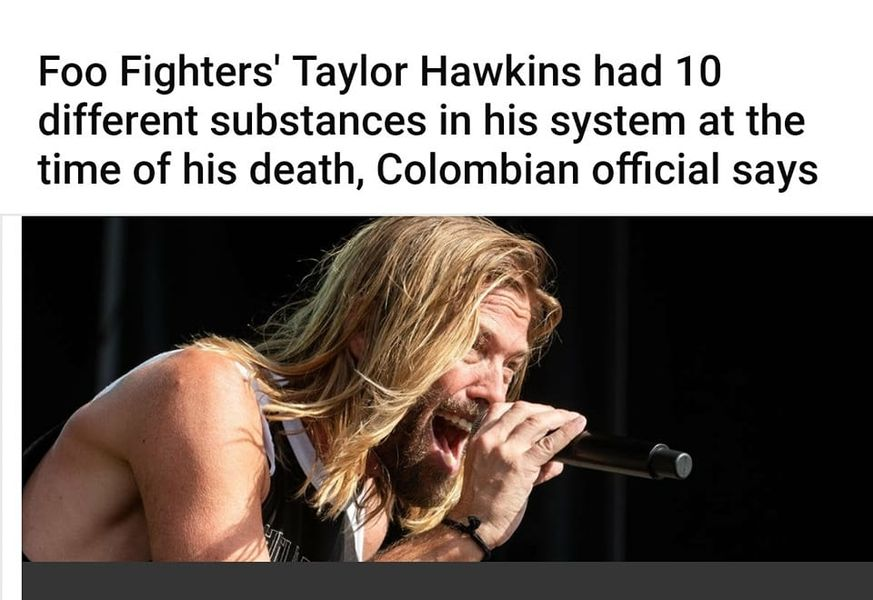

Mobile uploads
"Among the drugs found by a urine toxicological test performed by officials were marijuana, opioids, tricyclic antidepressants and benzodiazepines, the statement said."
****
The difference between this guy and a homeless guy is that this guy was rich and famous. He had overdosed before. He clearly was mentally tortured.
We likely all know an actor or artist or musician or author that died from an overdose.
ADDICTION IS NOT A CRIME. IT'S AN ILLNESS.
But when you overdose as a poor person you are usually treated as a disgusting loser that is just a drain on society.
Provisional data from CDC’s National Center for Health Statistics indicate that there were an estimated 100,306 drug overdose deaths in the United States during 12-month period ending in April 2021, an increase of 28.5% from the 78,056 deaths during the same period the year before.
ADDICTION IS NOT A CRIME. IT'S AN ILLNESS.